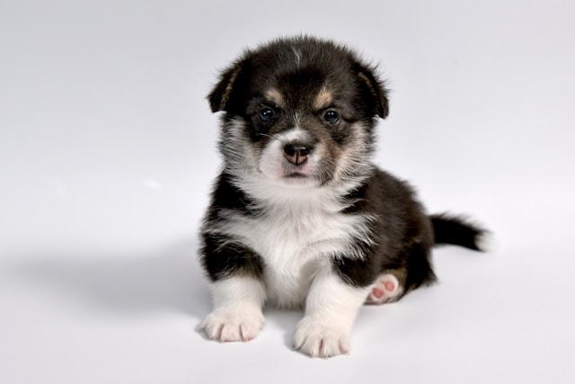
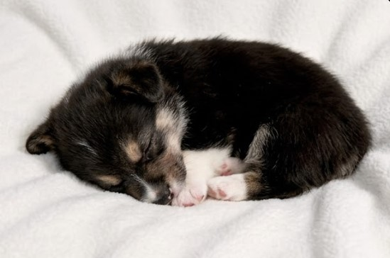
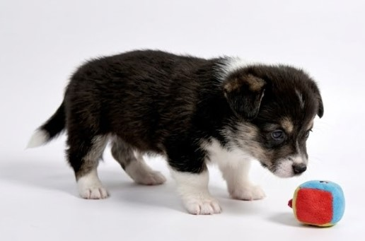
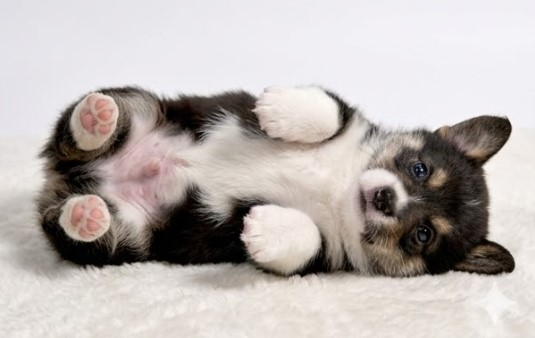

Max
DisponibilCâine Metis • Băiat • 2 ani
⚡ Super Energetic
🎾 Iubește jucăriile
👦 Bun cu copiii
💉 Vaccinat
Despre mine
Salutare! Eu sunt Max. Am fost găsit rătăcind pe străzile din Craiova, dar acum sunt gata să îmi găsesc familia forever. Sunt un pic cam neîndemânatic uneori, dar compensez cu tone de iubire. Ziua mea perfectă include o alergare lungă prin parc și un somn zdravăn pe canapea (sper că ai voie cu câini pe canapea!).
Talie: Medie (aprox. 5 kg)
Nivel energie: Ridicat
Adăpostul "Suflete Neclintite" Craiova. Vizitele se fac doar cu programare.